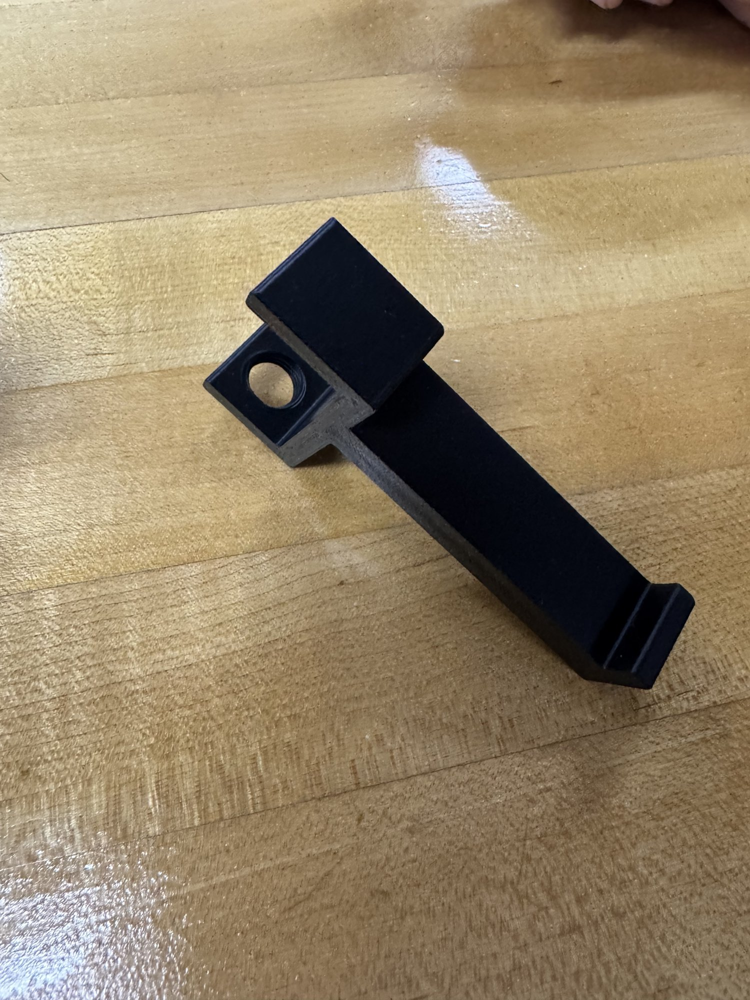
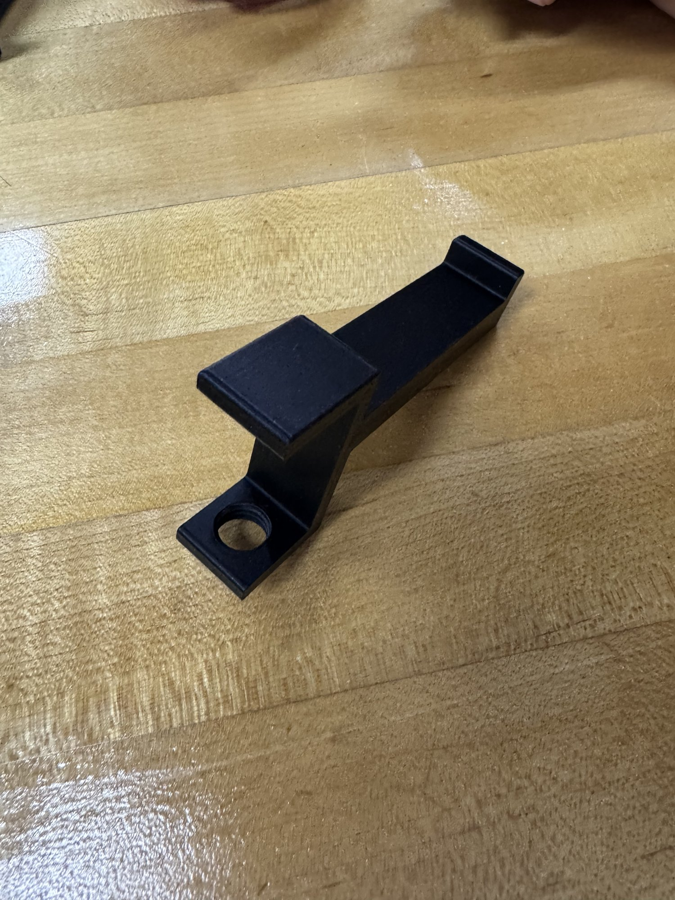

Trash Holder Printed
A desk-mounted trash holder for used tissues. I have a chronic runny nose, so I wanted a place right at my desk to put tissues. This grew out of the "tissue holder under table" idea from the original brainstorm.
How it works
- Clamp: attaches to the desk edge and tightens on, like a microphone arm clamp. No screws into the desk.
- Holder: the printed part, screws into the clamp through the round hole in the mounting tab.


Notes
Still TBD: what actually hangs on the arm (a small bag, a cup), clamp details, and how well it holds up in daily use.